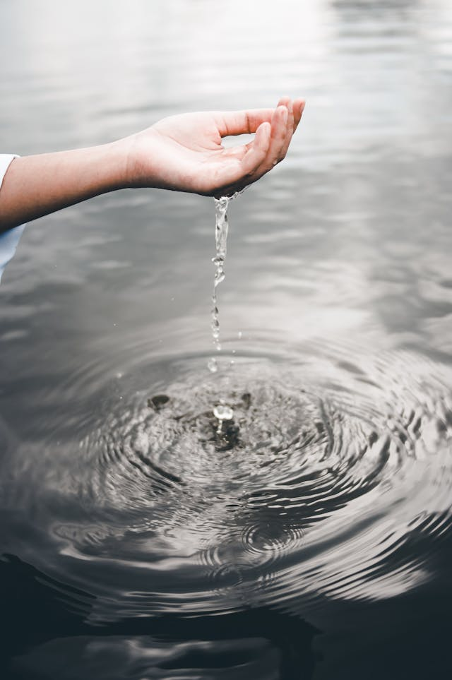

5 Benefícios da Água
 Foto de: Muhamed Litfi - Pexels1° - Hidratação Fundamental
A água é o elemento essencial para manter nosso corpo funcionando de maneira adequada. Ela é crucial para a saúde dos órgãos, a regulação da temperatura corporal e a eliminação de toxinas.
2° - Energia e Desempenho
Ao manter-se hidratado, você contribui para a otimização do desempenho físico e mental. A desidratação pode levar à fadiga e à diminuição da concentração, enquanto a água ajuda a manter níveis adequados de energia.
3° - Digestão Eficiente
A água desempenha um papel vital na digestão, facilitando a quebra dos alimentos e a absorção de nutrientes. Isso não só promove a saúde digestiva, mas também sustenta o corpo com os elementos necessários para seu funcionamento ideal.
4° - Controle de Peso e Saúde da Pele
Beber água antes das refeições pode ajudar a controlar o apetite, sendo uma ferramenta valiosa para quem busca manter ou perder peso. Além disso, a hidratação adequada é um segredo para uma pele saudável, radiante e resistente ao envelhecimento.
5° - Promoção da Função Cognitiva
Um motivo adicional para aumentar a ingestão de água está relacionado à melhora da função cognitiva. A desidratação leve pode afetar negativamente a concentração, o foco e a clareza mental. Ao manter-se bem hidratado, você contribui para um melhor desempenho intelectual, favorecendo a agilidade mental e a tomada de decisões mais eficientes. Portanto, beber água regularmente não apenas beneficia o corpo, mas também impulsiona a saúde do cérebro, melhorando seu funcionamento e produtividade ao longo do dia.
Bônus - Reflexão Pessoal
Ao considerar esses benefícios, é importante refletir sobre nossos hábitos de consumo de água. Muitas vezes, subestimamos a importância desse líquido vital em nossas vidas diárias. Que tal reservar um momento para pensar sobre como podemos incorporar conscientemente mais água em nossa rotina?
Conclusão
A água é verdadeiramente o elixir da vida, proporcionando benefícios inestimáveis à nossa saúde física e mental. Ao reconhecer a importância da hidratação, convido você a considerar como pequenas mudanças em seus hábitos podem resultar em melhorias significativas. Crie o hábito de beber água regularmente, conscientizando-se dos impactos positivos que isso pode ter em seu bem-estar. Sua jornada para uma vida mais saudável começa com algo tão simples quanto um copo de água.